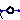
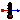

Components with Rankine input and/or output
The components of this package are provided for the convenience of people working mostly with Rankine units, since all models in package HeatTransfer are based on Kelvin units.
Note, that in package SIunits.Conversions, functions are provided to convert between the units Kelvin, degree Celsius, degree Fahrenheit and degree Rankine. These functions allow, e.g., a direct conversion of units at all places where Kelvin is required as parameter. Example:
import SIunits.Conversions.*;
Modelica.Thermal.HeatTransfer.HeatCapacitor C(T0 = from_degRk(500));
Extends from Modelica.Icons.VariantsPackage (Icon for package containing variants).
| Name | Description |
|---|---|
| Conversion block from degRankine to Kelvin | |
|  FromKelvin | Conversion from Kelvin to degRankine |
| Fixed temperature boundary condition in degRankine | |
| Variable temperature boundary condition in degRankine | |
|  TemperatureSensor | Absolute temperature sensor in degRankine |
Conversion block from degRankine to Kelvin
This component converts all input signals from degree Rankine to Kelvin and provides them as output signals.
| Name | Description |
|---|---|
| n | Only kept for backwards compatibility (parameter is not used in the model and will be removed in a future version) |
| Name | Description |
|---|---|
| Rankine | [degRk] |
| Kelvin | [K] |
Conversion from Kelvin to degRankine
This component converts all input signals from Kelvin to Rankine and provides them as output signals.
| Name | Description |
|---|---|
| n | Only kept for backwards compatibility (parameter is not used in the model and will be removed in a future version) |
| Name | Description |
|---|---|
| Kelvin | [K] |
| Rankine | [degRk] |
 Modelica.Thermal.HeatTransfer.Rankine.FixedTemperature
Modelica.Thermal.HeatTransfer.Rankine.FixedTemperatureFixed temperature boundary condition in degRankine
This model defines a fixed temperature T at its port in degree Rankine, [degRk], i.e., it defines a fixed temperature as a boundary condition.
| Name | Description |
|---|---|
| T | Fixed Temperature at the port [degRk] |
| Name | Description |
|---|---|
| port |
 Modelica.Thermal.HeatTransfer.Rankine.PrescribedTemperature
Modelica.Thermal.HeatTransfer.Rankine.PrescribedTemperatureVariable temperature boundary condition in degRankine
This model represents a variable temperature boundary condition The temperature value in degree Rankine, [degRk] is given by the input signal to the model. The effect is that an instance of this model acts as an infinite reservoir able to absorb or generate as much energy as required to keep the temperature at the specified value.
| Name | Description |
|---|---|
| port | |
| T | [degRk] |
 Modelica.Thermal.HeatTransfer.Rankine.TemperatureSensor
Modelica.Thermal.HeatTransfer.Rankine.TemperatureSensorAbsolute temperature sensor in degRankine
This is an ideal absolute temperature sensor which returns the temperature of the connected port in Rankine as an output signal. The sensor itself has no thermal interaction with whatever it is connected to. Furthermore, no thermocouple-like lags are associated with this sensor model.
| Name | Description |
|---|---|
| T | |
| port |